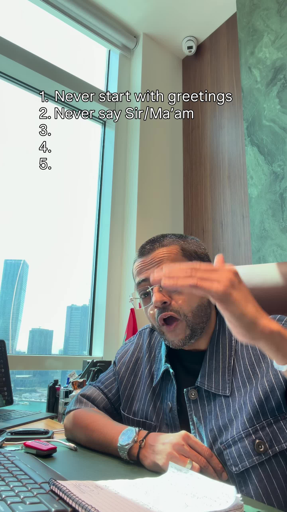
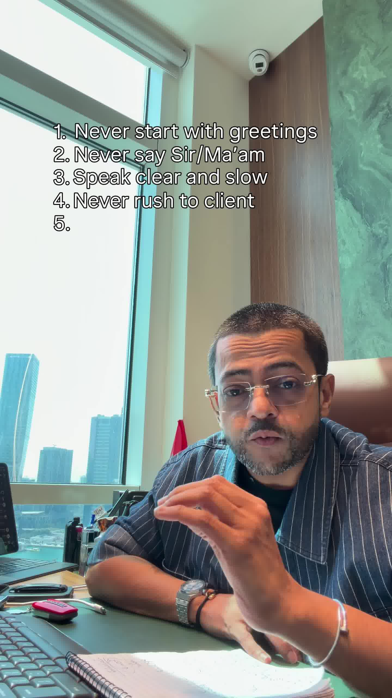

Executive Summary
In high-ticket consulting, agency services, and real estate, closing deals depends heavily on subconscious authority and status dynamics established within the first 60 seconds of a sales conversation. Sales reps and freelancers frequently adopt subservient postures, speak too rapidly, and rush to counter client objections, inadvertently signaling desperation.
In this masterclass, high-ticket dealmaker and luxury realtor Harley breaks down the 5 phrases and communication patterns to ban from client sales calls, establishing equal peer-level authority and trust.
Core Visual Demonstrations


The 5 High-Ticket Sales Call Rules
1. Ban the Cliché Pleasantry Opening ("Hope you're doing well")
Starting a phone call with "Hello, hope you're doing well today!" instantly flags the caller as an outbound telemarketer reading a generic script. Decision-makers subconsciously tune out.
The Fix: Open directly with context and clarity: "Hi [Name], thanks for taking my call. I'm reaching out specifically regarding..." Respect their time by being concise.
2. Never Address Clients as "Sir" or "Ma'am"
Using hierarchical honorifics ("Yes sir", "Right away ma'am") places you in a subservient vendor/waitstaff position. Enterprise clients and wealthy buyers do not take strategic advice from subordinates; they hire peer subject-matter experts.
The Fix: Address clients by their first name with warm, composed professionalism.
3. Master Deliberate, Unhurried Cadence
Rapid speech signals nervousness and a lack of conviction. Speaking at a calm, controlled tempo communicates deep domain mastery and emotional composure under pressure.
4. Pause Before Countering Objections
When a prospect expresses an objection (e.g. "Your retainer is 30% higher than agency X"), amateur reps immediately interrupt with defensive justifications.
The Fix: Practice the 2-second pause. Acknowledge and validate their observation first: "That makes complete sense. Price is a critical consideration..." This diffuses combativeness before redirecting to scope and value.
5. Socratic Discovery & The Reflection Summary Close
Top closers spend 70% of the call asking diagnostic questions rather than pitching features.
The Bonus Closing Technique: Before hanging up, summarize the entire conversation by reflecting their exact words back to them:
"Just to make sure we're 100% aligned, you're looking for [Requirement A], your primary frustration with your current setup is [Pain Point B], and your goal is to launch by [Timeline C]. Did I capture that accurately?"
When prospects hear their own situation perfectly mirrored, perceived competence surges, making the subsequent proposal an effortless signature.